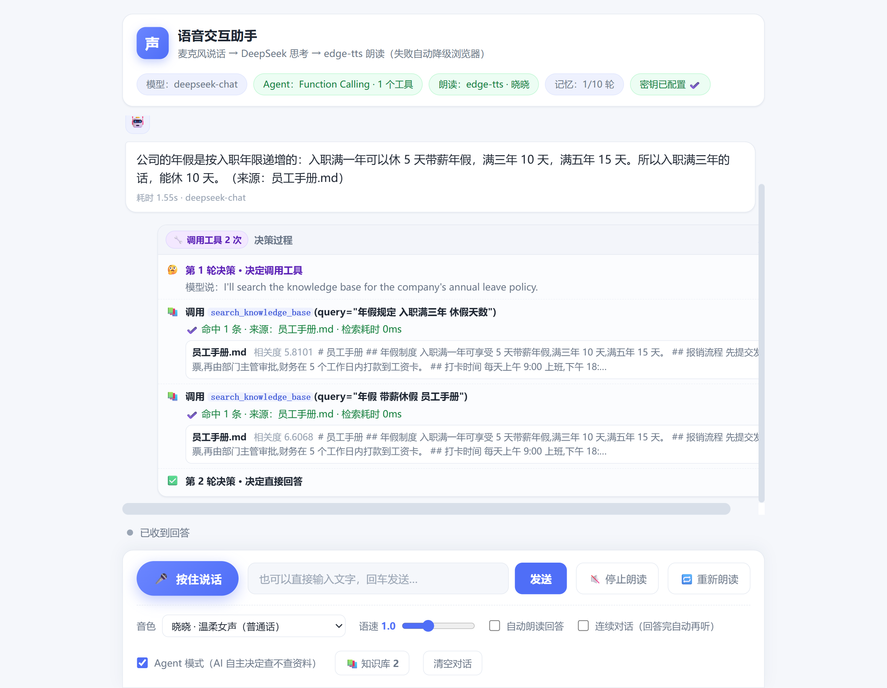
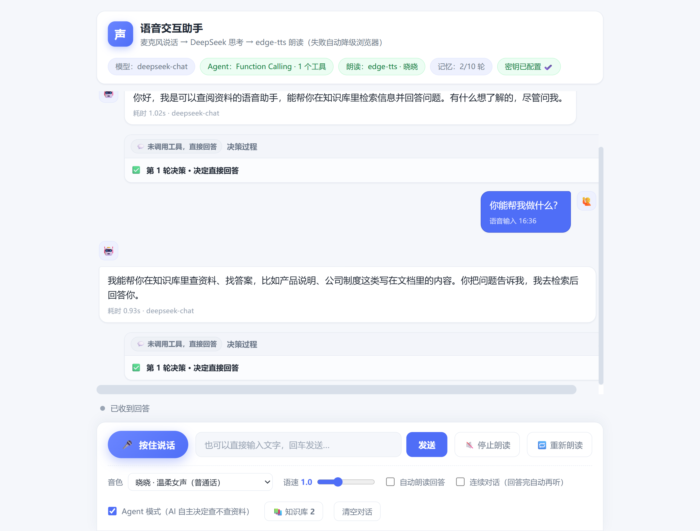
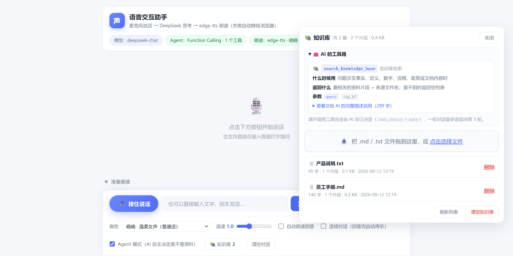
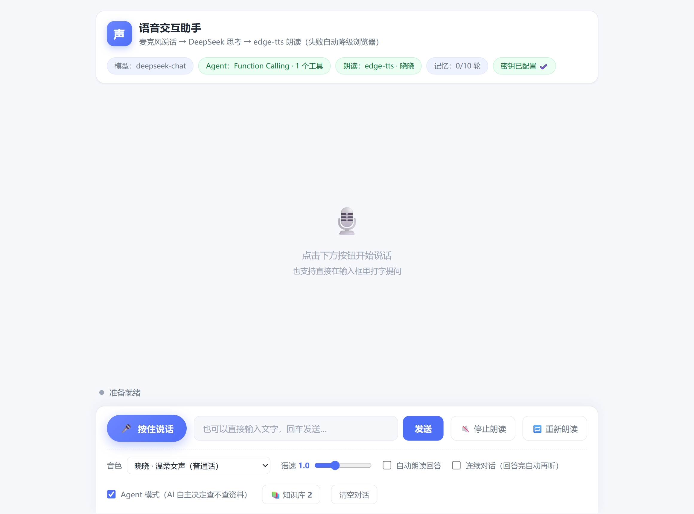

对着麦克风说话 → DeepSeek 思考 → edge-tts 朗读的本地语音应用。从 v3 起它不只会聊天， 更是一个 Agent：要不要查资料由模型自己决定， 查不到就如实回答「资料里没有提到」，整个决策过程在前端摊开给你看。
▶ 在线体验界面 不必装环境 —— 回放真实运行的对话与决策过程 →常见语音助手只能「问一句答一句」，答案对不对全靠模型自由发挥。这个项目想验证另一条路： 把本地文档交给 AI 当资料库，让它自己判断什么时候该去查、什么时候不该查， 并且把「查没查、查到什么、来源是哪个文件」全部暴露出来。整条链路 listen → think → speak 三层互不依赖，任何一层都能单独替换或测试。

问一句公司年假规定，模型先调 search_knowledge_base 检索本地 员工手册.md，
相关度 5.81 / 6.61 两条命中后，第二轮才决定作答 —— 答案末尾自动标注「来源：员工手册.md」。
整条 trace（决策 → 调用 → 命中片段 → 再决策）实时渲染在回答下方。

同样一个 Agent，面对「你能帮我做什么」这类闲聊时，两轮决策卡都写着
未调用工具，直接回答 —— 没有为了「显得在干活」而空跑一次检索；
而上一张图里问年假规定时它主动调了工具。标签栏的「记忆 2/10 轮」说明多轮上下文由服务端按
session_id 保留。这个对比正是 tool_choice:"auto" 生效的证据。

拖拽上传 .md / .txt 即成为 AI 的资料；面板直接把发给模型的工具说明摊开 ——
「什么时候必须调用」「返回什么」「查不到必须如实回答」，让 Agent 的行为完全可解释。

顶部标签实时反映运行状态：当前模型、Agent 工具数、朗读引擎与音色、记忆轮次、密钥是否配置。 底部一行是语音入口（按住说话）与文字输入双通道。
请求体带 tools + tool_choice:"auto"，闲聊不查库，问事实才调工具 —— 决策权在模型手上。
系统提示词约束 + 工具结果里再强调一遍 + 一致性校验：没查就下结论时系统替它补查再重答。
edge-tts 在线合成失败时，自动回退到浏览器原生 speechSynthesis，对话流程完全不中断。
按 session_id 隔离，保留最近 10 轮；刷新页面、甚至重启后端上下文都还在。
只用标准库实现二元组切词 + BM25 风格 IDF 打分，另有单字兜底与文件名入词表。
v3 的新接口全部走 Flask Blueprint，原有路由一行没改，老测试 102 个用例全绿。
SpeechRecognition 把语音转成文字（listen）。decide() 带上工具箱请模型做一次判断：调工具，还是直接回答。run_tool() 就在本地知识库检索，把命中片段塞回对话。模型能否正确判断「该不该查」，全靠这段说明 —— 所以它写得足够具体。
真实案例：问「我们几点下班？」模型一度直接答「资料里没有提到」，补查后它才正确回答「下午 18:00 下班」。
两个真正联网的函数都支持注入替身，因此全链路可离线验证：参数换算、重试与降级、记忆窗口、接口契约、前端函数调用关系。
每条回答下方附决策卡，徽章区分「调用工具 N 次」「未调用工具」「系统补查 N 次」，一眼看出这轮有没有查资料。
支持拖拽上传 .md / .txt，文件名做安全清洗挡掉路径穿越，单文件 2MB、整库 20MB 上限。
密钥只从环境变量读取，仓库中不含任何真实凭据，clone 下来配一个变量就能跑。